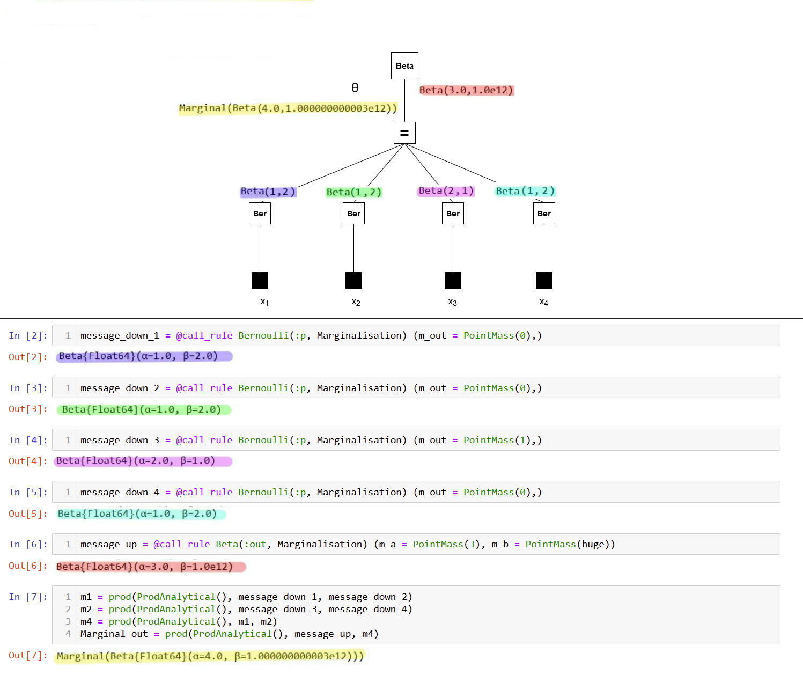

Debugging
Debugging RxInfer can be quite challenging, mostly due to custom typing, the use of observables and Julia's stack tracing in general. Below we discuss ways to help you find problems in your model that prevents you from getting the results you want.
Requesting a trace of messages
We have developed a way that allows us to save the history of the computations leading up to the computed messages and marginals in an inference procedure. This history is added on top of messages and marginals and is referred to as a "Memory Addon". Below is an example explaining how you can extract this history and use it to fix a bug.
Consider the coin toss example from earlier in the documentation. We model the binary outcome $x$ (heads or tails) using a Bernoulli distribution, with a parameter 𝜃 that represents the probability of landing on heads. We have a Beta prior distribution for the $\theta$ parameter, with a known shape 𝑎 and rate 𝑏 parameter.
\[x_i \sim \mathrm{Bernoulli}(\theta)\]
\[\theta \sim \mathrm{Beta}(a, b)\]
where $x_i \in {0, 1}$ are the binary observations (heads = 1, tails = 0). This is the corresponding RxInfer model:
using RxInfer, Random, Plots
n = 4
θ_real = 0.3
dataset = convert.(Int64, rand(Bernoulli(θ_real), n))
@model function coin_model(n)
# Observations
x = datavar(Int64, n)
# Prior distribution
θ ~ Beta(4, huge)
# Likelihood for each input
for i in 1:n
x[i] ~ Bernoulli(θ)
end
end
result = inference(
model = coin_model(length(dataset)),
data = (x = dataset, ),
);Inference results:
Posteriors | available for (θ)
The model will run without errors. But when we plot the posterior distribution for $\theta$, something's wrong. The posterior seems to be a flat distribution:
rθ = range(0, 1, length = 1000)
plot(rθ, (rvar) -> pdf(result.posteriors[:θ], rvar), label="Infered posterior")
vline!([θ_real], label="Real θ", title = "Inference results")We can figure out what's wrong by looking at the Memory Addon. To obtain the trace, we have to add addons = (AddonMemory(),) as an argument to the inference function.
result = inference(
model = coin_model(length(dataset)),
data = (x = dataset, ),
addons = (AddonMemory(),)
)Inference results:
Posteriors | available for (θ)
Now we have access to the messages that led to the marginal posterior:

The messages in the factor graph are marked in color. If you're interested in the mathematics behind these results, consider verifying them manually using the general equation for sum-product messages:
\[\underbrace{\overrightarrow{\mu}_{θ}(θ)}_{\substack{ \text{outgoing}\\ \text{message}}} = \sum_{x_1,\ldots,x_n} \underbrace{\overrightarrow{\mu}_{X_1}(x_1)\cdots \overrightarrow{\mu}_{X_n}(x_n)}_{\substack{\text{incoming} \\ \text{messages}}} \cdot \underbrace{f(θ,x_1,\ldots,x_n)}_{\substack{\text{node}\\ \text{function}}}\]

Note that the posterior (yellow) has a rate parameter on the order of 1e12. Our plot failed because a Beta distribution with such a rate parameter cannot be accurately depicted using the range of $\theta$ we used in the code block above. So why does the posterior have this rate parameter?
All the observations (purple, green, pink, blue) have much smaller rate parameters. It seems the prior distribution (red) has an unusual rate parameter, namely 1e12. If we look back at the model, the parameter was set to huge (which is a reserved keyword meaning 1e12). Reducing the prior rate parameter will ensure the posterior has a reasonable rate parameter as well.
@model function coin_model(n)
# Observations
x = datavar(Int64, n)
# Prior distribution
θ ~ Beta(4, 100)
# Likelihood for each input
for i in 1:n
x[i] ~ Bernoulli(θ)
end
end
result = inference(
model = coin_model(length(dataset)),
data = (x = dataset, ),
);Inference results:
Posteriors | available for (θ)
rθ = range(0, 1, length = 1000)
plot(rθ, (rvar) -> pdf(result.posteriors[:θ], rvar), label="Infered posterior")
vline!([θ_real], label="Real θ", title = "Inference results")Now the posterior is visible in the plot.